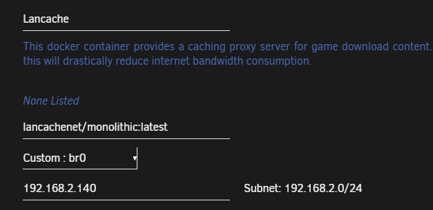
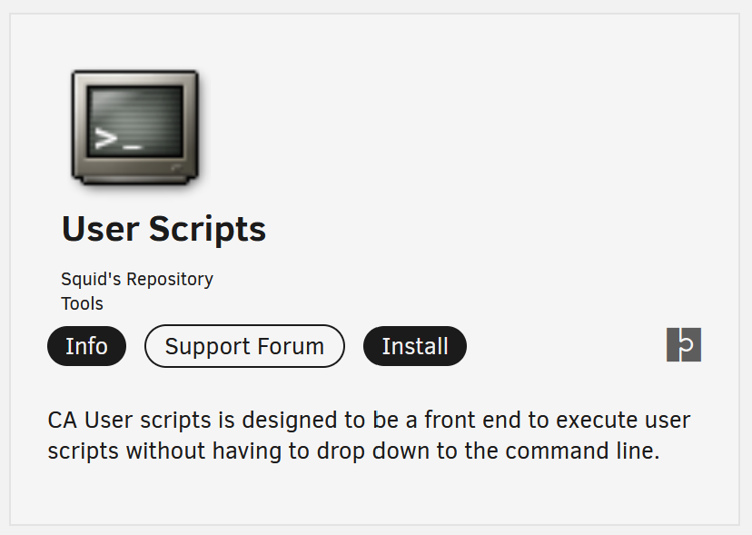
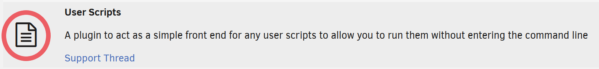

Unraid Setup Guide¶
Prior to installing SteamPrefill via docker you should ensure you have a working Lancache caching and Lancache DNS server installed on your system.
Note
These steps assume that you are running Lancache caching server as a docker container on a custom network configured for your own subnet.

Installing SteamPrefill Docker Image¶
Again from your Unraid terminal you will download and run the SteamPrefill Docker image.
Note
--add-host=lancache.steamcontent.com:XXX.XXX.XXX.XXX is required in order to tell the container the IP Address of your Lancache server running on your custom network. If not specified, SteamPrefill will be unable to locate the Lancache server, and will be unable to prefill.
Next you will run the following command to setup the container, and start configuring which apps to prefill.
docker run -it --rm \
--net=br0 \
--add-host=lancache.steamcontent.com:XXX.XXX.XXX.XXX \
--volume /mnt/user/appdata/SteamPrefill:/Config \
tpill90/steam-lancache-prefill:latest \
select-apps
To get familiarized with how to use SteamPrefill, see the Getting Started guide.
Setting up a schedule¶
The User Scripts Community App can be used to create and configure custom scheduled jobs on Unraid. To begin, ensure that the app is installed from Unraid's App tab, if it isn't already installed.

After installing User Scripts, click Unraid's Plugins tab, then the User Scripts icon to open up the settings for scheduled jobs.

Next, add a new script by clicking ADD NEW SCRIPT, and give it the name Steam Prefill. After it has been created, click the orange gear next to Steam Prefill, and select EDIT SCRIPT.
Adding the following command will configure the scheduled job to run the prefill command every time it is configured. Be sure sure to change XXX.XXX.XXX.XXX to your Lancache server IP.
Note
This command is almost identical to the one we used previously, except for --it being omitted. This will make the container run non-interactively, as required by User Scripts
#!/bin/bash
docker rm -f SteamPrefill &>/dev/null && echo 'Removed old container from previous run';
docker run --rm --name SteamPrefill \
--net=br0 \
--add-host=lancache.steamcontent.com:XXX.XXX.XXX.XXX \
--volume /mnt/user/appdata/SteamPrefill:/Config \
tpill90/steam-lancache-prefill:latest \
prefill
After saving changes, the final step will be to decide on a schedule, and configure that schedule. Change the schedule drop down from Schedule Disabled, to Custom, which will allow you to specify your desired schedule. Jobs are configured by specifying a Cron expression that describes the schedule to run on.
Some examples of cron expressions:
| Schedule | Cron Expression |
|---|---|
| Every day at 2am | 0 2 * * * |
| Every 4 hours | 0 */4 * * * |
If the above examples don't cover your use case, crontab.guru is an online cron expression editor that can interactively edit cron expressions, and explain what they mean.
Finally after entering a cron expression, click APPLY to save your cron expression. You should now be all set to have SteamPrefill run on a schedule!
Next Steps¶
If you are new to SteamPrefill and would like an introductory tutorial, see the Getting Started guide.
Answers to common issues and questions can be found at Frequently Asked Questions.
Alternatively, to see all of the features that SteamPrefill offers, take a look at Detailed command usage